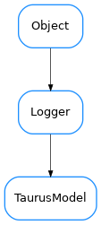

TaurusModel¶

-
class
TaurusModel(full_name='', parent=None, serializationMode=None)[source]¶ Bases:
taurus.core.util.log.Logger-
RegularEvent= (0, 1, 2)¶
-
fireEvent(event_type, event_value, listeners=None)[source]¶ sends an event to all listeners or a specific one
-
property
fullname¶
-
getDisplayDescrObj(cache=True)[source]¶ A brief description of the model. Can be used as tooltip, for example
-
getFragmentObj(fragmentName=None)[source]¶ Returns a fragment object of the model. A fragment is computed from a model by evaluating the expression <model>.<fragmentName>
For a simple fragmentName (no dots), this is roughly equivalent to getattr(self, fragmentName)
If the fragment cannot be computed,
AttributeErroris raised- Parameters
fragmentName (
strorNone) – the returned value will correspond to the given fragmentName. If None is passed the defaultFragmentName will be used instead.- Return type
obj- Returns
the computed fragment of the modelObj.
-
getSerializationMode()[source]¶ Gives the serialization operation mode.
- Return type
TaurusSerializationMode- Returns
the current serialization mode
-
property
name¶
-
property
parentObj¶
-